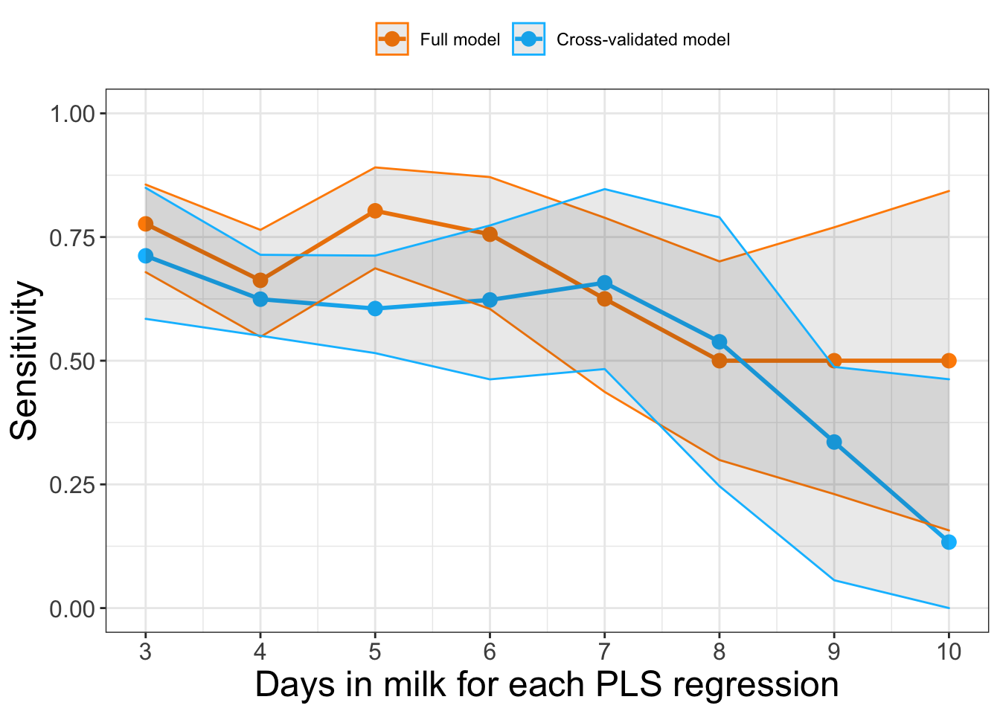
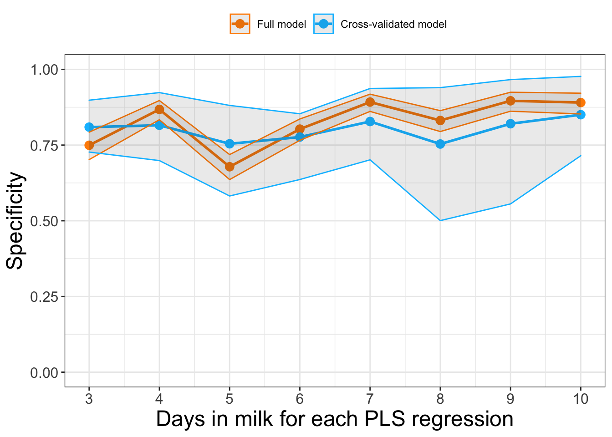
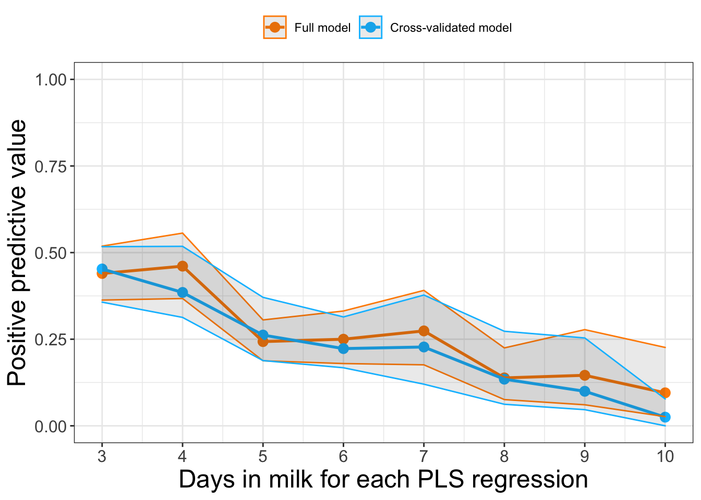
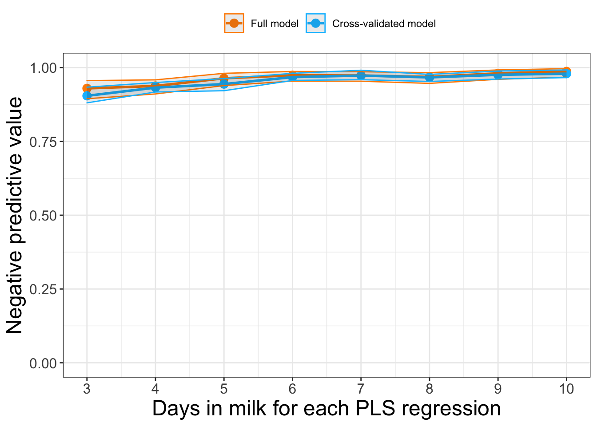

Assessing differences in early lactation milk constituents between Holstein cows of varying health outcomes
Eric Teplitz
Data importation
All statistical analyses, data manipulation, and visualization were completed using the statistical software, R (version 4.1.2). The following R packages were used: tidyr, dplyr, ggplot2, readr, cutpointr, pls, car, caret, plotROC, knitr, epiR, kableExtra, and pROC.
The dataset was filtered to only include milk samples between 3-10 days in milk. There were 7 Jersey cows included in the original dataset and these have been removed below for this analysis (remaining cows are all Holstein breed). Individual cows were classified as “positive” for metritis if trained farm personnel diagnosed the cow with metritis at 14 DIM or earlier. Cows were classified as “positive” for ketosis if trained farm personnel diagnosed the cow with ketosis at 14 DIM or earlier. Cows were classified as “positive” for displaced abomasum (DA) if trained farm personnel diagnosed the cow with DA at 14 DIM of earlier. We only want to consider illness within the first 14 days because that is when most cows leave the pen of concern. Cows were defined as “sick” if they were positive for at least one of these health outcomes (metritis, ketosis, or displaced abomasum). If an individual cow were diagnosed with ketosis, metritis, displaced abomasum, or mastitis, milk samples from this individual on all subsequent days were removed from the dataset. Parity 1 cows are defined as primiparous and parity 2+ cows are defined as multiparous.
# Reading in data and basic formatting
library(readr)
library(tidyr)
library(dplyr)
library(pls)
library(car)
library(caret)
library(ggplot2)
library(plotROC)
library(pROC)
library(knitr)
library(epiR)
df <- read_csv("FINAL dataset.csv")
# Here, I filter the dataset to only include the relevant variables (cow ID, potential predictors, health events) and restrict the dataset to the timepoints 3-10 DIM. I also remove 7 jersey cows from the dataset.
df = df %>%
select(cow_id, dim, milkweightlbs, parity, dim_met, dim_da, dim_ket, dim_cull, dim_mast, lactose, protein, mun, fatb70a30, denovofa, mixedfa, preformedfa, dnrel, mixrel, pfrel, c160,
c180, c181c9, acetone, nefaPREDICTED, bhbPREDICTED) %>%
filter(dim<=10 & dim>=3) %>%
filter(cow_id != 30351 & cow_id != 38267 & cow_id != 38469 & cow_id != 38836 &
cow_id != 60614 & cow_id != 60619 & cow_id != 60630)
# This creates binary variables for health outcomes. We only want to consider illness within the first 14 days because that is when most cows leave the pen of concern. A cow is therefore considered "sick" if it has metritis, ketosis, or DA.
df$metritis = 0; df$metritis[!is.na(df$dim_met) & df$dim_met <= 14] = 1
df$DA = 0; df$DA[!is.na(df$dim_da) & df$dim_da <= 14] = 1
df$ketosis = 0; df$ketosis[!is.na(df$dim_ket) & df$dim_ket <= 14] = 1
df$cull = 0; df$cull[!is.na(df$dim_cull)] = 1
df$mastitis = 0; df$mastitis[!is.na(df$dim_mast)] = 1
df$sick= 0; df$sick[df$metritis + df$DA + df$ketosis != 0] = 1
df$multiparous = 0; df$multiparous[df$parity>1] = 1
df$multiparous = as.factor(df$multiparous)
### Removes milk collections from dataset after they get sick (from ketosis, DA, metritis, or mastitis). We suspect that the milk composition will be disrupted, and we only are interested in predicting health outcomes from samples taken before they are diagnosed as sick. Mastitis is not a health outcome of concern for this study, but we highly suspect it will significantly impact milk composition.
df = df %>%
filter( (dim<=dim_ket | is.na(dim_ket)) &
(dim<=dim_da | is.na(dim_da)) &
(dim<=dim_met | is.na(dim_met)) &
(dim<=dim_mast | is.na(dim_mast)) )
#
#
#
#
### End of initial data modificationKey to variables
cow_id: cow identification numberdim: days in milkmilkweightlbs: pounds of milk produced by cow during that milk collectionparity: parity for an individual cow (if first calf, parity=1; if second, parity=2)dim_met: day of metritis diagnosis, value is NA if nonedim_da: day of DA diagnosis, value is NA if nonedim_ket: day of ketosis diagnosis, value is NA if nonedim_cull: day cow was removed from herd, value is NA if nonedim_mast: day of mastitis diagnosis, value is NA if nonelactose: lactose, %protein: protein, %mun: milk urea nitrogen, mg/dLfatb70a30: fat, %denovofa: de novo fatty acids, g/100g milkmixedfa: mixed fatty acids, g/100g milkpreformedfa: preformed fatty acids, g/100g milkdnrel: de novo fatty acids, relative %mixrel: mixed fatty acids, relative %pfrel: preformed fatty acids, relative %c160: C16:0, g/100g milkc180: C18:0, g/100g milkc181c9: C18:1 cis-9, g/100g milkacetone: acetone, mmol/LnefaPREDICTED: predicted blood NEFA, umol/LbhbPREDICTED: BHB, mmol/L
Number of cows enrolled
| Parity 1 | Parity 2 | Parity 3 | Parity 4 | Parity 5 | Parity 6 | Parity 7 |
|---|---|---|---|---|---|---|
| 306 | 274 | 232 | 117 | 58 | 25 | 12 |
Number of samples at each timepoint
| 3 DIM | 4 DIM | 5 DIM | 6 DIM | 7 DIM | 8 DIM | 9 DIM | 10 DIM |
|---|---|---|---|---|---|---|---|
| 465 | 549 | 579 | 562 | 523 | 506 | 409 | 355 |
Partial least squares (PLS) regression
Stratifying dataset by each DIM
The dataset was stratified into 8 separate datasets for each day in milk (3-10 DIM).
df3 = df %>% filter(dim == 3)
df4 = df %>% filter(dim == 4)
df5 = df %>% filter(dim == 5)
df6 = df %>% filter(dim == 6)
df7 = df %>% filter(dim == 7)
df8 = df %>% filter(dim == 8)
df9 = df %>% filter(dim == 9)
df10 = df %>% filter(dim == 10)Running partial least squares regression for each timepoint
Partial least squares (PLS) regression was used to model health outcomes as a function of the 16 milk constituents and parity (primiparous vs. multiparous). Partial least squares regression is a supervised machine learning method that creates composite variables, known as components, from a number of continuous and binary predictors. These components are constructed to maximize the explained variance of the predictors as well as maximize the correlation between the components and the response variable. Milk constituent predictors included: lactose (%), milk urea nitrogen (mg/dL), protein (%), fat (%), de novo fatty acids (g/100g milk), mixed fatty acids (g/100g milk), preformed fatty acids (g/100g milk), relative % of de novo fatty acids, relative % of mixed fatty acids, relative % of preformed fatty acids, C16:0 (g/100g milk), C18:0 (g/100g milk), C18:1 cis-9 (g/100g milk), acetone (mmol/L), predicted blood NEFA (umol/L), and BHB (mmol/L). Parity was defined as a binary variable with two levels (primiparous and multiparous) and used as a predictor in the PLS model. The variable, sick, was used as the response variable. Cows were defined as sick if they were diagnosed with metritis, ketosis, or displaced abomasum within the first 14 days in milk. A separate PLS regression was completed for each DIM to reduce bias from the variability of milk constituent values by DIM and the unequal number of samplings for each cow. In this stratified modelling approach, each cow appears only once in the dataset and all individual cows are at the same day of lactation for each model.
PLS3 <- plsr(sick ~ lactose+protein+mun+fatb70a30+denovofa+mixedfa+preformedfa+dnrel+mixrel+pfrel+
c160+c180+c181c9+acetone+nefaPREDICTED+bhbPREDICTED+multiparous,
data=df3, scale=T, validation = "CV")
PLS4 <- plsr(sick ~ lactose+protein+mun+fatb70a30+denovofa+mixedfa+preformedfa+dnrel+mixrel+pfrel+
c160+c180+c181c9+acetone+nefaPREDICTED+bhbPREDICTED+multiparous,
data=df4, scale=T, validation = "CV")
PLS5 <- plsr(sick ~ lactose+protein+mun+fatb70a30+denovofa+mixedfa+preformedfa+dnrel+mixrel+pfrel+
c160+c180+c181c9+acetone+nefaPREDICTED+bhbPREDICTED+multiparous,
data=df5, scale=T, validation = "CV")
PLS6 <- plsr(sick ~ lactose+protein+mun+fatb70a30+denovofa+mixedfa+preformedfa+dnrel+mixrel+pfrel+
c160+c180+c181c9+acetone+nefaPREDICTED+bhbPREDICTED+multiparous,
data=df6, scale=T, validation = "CV")
PLS7 <- plsr(sick ~ lactose+protein+mun+fatb70a30+denovofa+mixedfa+preformedfa+dnrel+mixrel+pfrel+
c160+c180+c181c9+acetone+nefaPREDICTED+bhbPREDICTED+multiparous,
data=df7, scale=T, validation = "CV")
PLS8 <- plsr(sick ~ lactose+protein+mun+fatb70a30+denovofa+mixedfa+preformedfa+dnrel+mixrel+pfrel+
c160+c180+c181c9+acetone+nefaPREDICTED+bhbPREDICTED+multiparous,
data=df8, scale=T, validation = "CV")
PLS9 <- plsr(sick ~ lactose+protein+mun+fatb70a30+denovofa+mixedfa+preformedfa+dnrel+mixrel+pfrel+
c160+c180+c181c9+acetone+nefaPREDICTED+bhbPREDICTED+multiparous,
data=df9, scale=T, validation = "CV")
PLS10 <- plsr(sick ~ lactose+protein+mun+fatb70a30+denovofa+mixedfa+preformedfa+dnrel+mixrel+pfrel+
c160+c180+c181c9+acetone+nefaPREDICTED+bhbPREDICTED+multiparous,
data=df10, scale=T, validation = "CV")Calculating predicted probabilities from the PLS models
We can use the PLS model to predict a numerical value for each datapoint that is a type of representation of predicted probability. The PLS model will construct 17 components from the 17 predictors. Again, these components are composite variables that maximize both the explained variance of the predictors as well as the correlation between the components and response variable. We aimed to use the lowest number of components that sufficiently captured the explained variance in predictors as well as produced a predictive model. Using 2 or 3 components captured a significant majority of explained variance in predictors. However, the model with 2 components was erratic and not as consistent during cross-validation procedures (explained in more detail below), and consequently we decided to construct our model using 3 components.
Here, I calculate the “predicted probability” using 3 components. Next, we can compare this “predicted probability” with the actual health outcomes observed (represented by the variable sick). Using this predicted probability as a diagnostic test value, we can calculate the area under the ROC curve for each PLS model. Note that there will be 8 separate PLS models.
df3$predict.prob = predict(PLS3, ncomp = 3, type = "response")
df4$predict.prob = predict(PLS4, ncomp = 3, type = "response")
df5$predict.prob = predict(PLS5, ncomp = 3, type = "response")
df6$predict.prob = predict(PLS6, ncomp = 3, type = "response")
df7$predict.prob = predict(PLS7, ncomp = 3, type = "response")
df8$predict.prob = predict(PLS8, ncomp = 3, type = "response")
df9$predict.prob = predict(PLS9, ncomp = 3, type = "response")
df10$predict.prob = predict(PLS10, ncomp = 3, type = "response")
AUC = rep(0,8)
AUC.low = rep(0,8)
AUC.high = rep(0,8)
AUC[1] = auc(df3$sick, df3$predict.prob)
AUC[2] = auc(df4$sick, df4$predict.prob)
AUC[3] = auc(df5$sick, df5$predict.prob)
AUC[4] = auc(df6$sick, df6$predict.prob)
AUC[5] = auc(df7$sick, df7$predict.prob)
AUC[6] = auc(df8$sick, df8$predict.prob)
AUC[7] = auc(df9$sick, df9$predict.prob)
AUC[8] = auc(df10$sick, df10$predict.prob)
AUC.low[1] = ci.auc(df3$sick, df3$predict.prob, conf.level = 0.95)[1]
AUC.low[2] = ci.auc(df4$sick, df4$predict.prob, conf.level = 0.95)[1]
AUC.low[3] = ci.auc(df5$sick, df5$predict.prob, conf.level = 0.95)[1]
AUC.low[4] = ci.auc(df6$sick, df6$predict.prob, conf.level = 0.95)[1]
AUC.low[5] = ci.auc(df7$sick, df7$predict.prob, conf.level = 0.95)[1]
AUC.low[6] = ci.auc(df8$sick, df8$predict.prob, conf.level = 0.95)[1]
AUC.low[7] = ci.auc(df9$sick, df9$predict.prob, conf.level = 0.95)[1]
AUC.low[8] = ci.auc(df10$sick, df10$predict.prob, conf.level = 0.95)[1]
AUC.high[1] = ci.auc(df3$sick, df3$predict.prob, conf.level = 0.95)[3]
AUC.high[2] = ci.auc(df4$sick, df4$predict.prob, conf.level = 0.95)[3]
AUC.high[3] = ci.auc(df5$sick, df5$predict.prob, conf.level = 0.95)[3]
AUC.high[4] = ci.auc(df6$sick, df6$predict.prob, conf.level = 0.95)[3]
AUC.high[5] = ci.auc(df7$sick, df7$predict.prob, conf.level = 0.95)[3]
AUC.high[6] = ci.auc(df8$sick, df8$predict.prob, conf.level = 0.95)[3]
AUC.high[7] = ci.auc(df9$sick, df9$predict.prob, conf.level = 0.95)[3]
AUC.high[8] = ci.auc(df10$sick, df10$predict.prob, conf.level = 0.95)[3]Evaluating predictive power of PLS model
AUC for each PLS model
| 3 DIM | 4 DIM | 5 DIM | 6 DIM | 7 DIM | 8 DIM | 9 DIM | 10 DIM |
|---|---|---|---|---|---|---|---|
| 0.8173998 | 0.805677 | 0.8195109 | 0.8251451 | 0.84375 | 0.7341346 | 0.7379747 | 0.7409942 |
Determining a cutpoint
Using this “predicted probability” as a diagnostic test value, we can determine a cutoff used to classify cows as healthy vs. sick. Below, I use a package called cutpointr that will determine a cutpoint for the “predicted probability” that maximizes the sum of the sensitivity and specificity.
library(cutpointr)
cp3 = cutpointr(data=df3, x=predict.prob, class=sick, method=maximize_metric, metric=sum_sens_spec)
cp4 = cutpointr(data=df4, x=predict.prob, class=sick, method=maximize_metric, metric=sum_sens_spec)
cp5 = cutpointr(data=df5, x=predict.prob, class=sick, method=maximize_metric, metric=sum_sens_spec)
cp6 = cutpointr(data=df6, x=predict.prob, class=sick, method=maximize_metric, metric=sum_sens_spec)
cp7 = cutpointr(data=df7, x=predict.prob, class=sick, method=maximize_metric, metric=sum_sens_spec)
cp8 = cutpointr(data=df8, x=predict.prob, class=sick, method=maximize_metric, metric=sum_sens_spec)
cp9 = cutpointr(data=df9, x=predict.prob, class=sick, method=maximize_metric, metric=sum_sens_spec)
cp10 = cutpointr(data=df10, x=predict.prob, class=sick, method=maximize_metric, metric=sum_sens_spec)
mergedCP = cp3 %>% bind_rows(cp4,cp5,cp6,cp7,cp8,cp9,cp10)Classifying outcomes using the determined cutoffs
Here, I use the PLS-derived “predicted probability” as a diagnostic test. If the “predicted probability” is above the cutpoint, then I classify the cow as sick. If the “predicted probability” is less than or equal to the cutpoint I classify the cow as healthy. The confusionMatrix function then creates a 2x2 table to compare the predicted health status with the true health status.
df3$test.result = 0; df3$test.result[df3$predict.prob > cp3$optimal_cutpoint] = 1
df4$test.result = 0; df4$test.result[df4$predict.prob > cp4$optimal_cutpoint] = 1
df5$test.result = 0; df5$test.result[df5$predict.prob > cp5$optimal_cutpoint] = 1
df6$test.result = 0; df6$test.result[df6$predict.prob > cp6$optimal_cutpoint] = 1
df7$test.result = 0; df7$test.result[df7$predict.prob > cp7$optimal_cutpoint] = 1
df8$test.result = 0; df8$test.result[df8$predict.prob > cp8$optimal_cutpoint] = 1
df9$test.result = 0; df9$test.result[df9$predict.prob > cp9$optimal_cutpoint] = 1
df10$test.result = 0; df10$test.result[df10$predict.prob > cp10$optimal_cutpoint] = 1
matrix3 = confusionMatrix(data=as.factor(df3$test.result), reference=as.factor(df3$sick), positive = "1")
matrix4 = confusionMatrix(data=as.factor(df4$test.result), reference=as.factor(df4$sick), positive = "1")
matrix5 = confusionMatrix(data=as.factor(df5$test.result), reference=as.factor(df5$sick), positive = "1")
matrix6 = confusionMatrix(data=as.factor(df6$test.result), reference=as.factor(df6$sick), positive = "1")
matrix7 = confusionMatrix(data=as.factor(df7$test.result), reference=as.factor(df7$sick), positive = "1")
matrix8 = confusionMatrix(data=as.factor(df8$test.result), reference=as.factor(df8$sick), positive = "1")
matrix9 = confusionMatrix(data=as.factor(df9$test.result), reference=as.factor(df9$sick), positive = "1")
matrix10 = confusionMatrix(data=as.factor(df10$test.result), reference=as.factor(df10$sick), positive = "1")Calculating sensitivity, specificity, PPV, and NPV
Here, I use the epi.tests function within a package called epiR to calculate sensitivity, specificity, positive predictive value, and negative predictive values as well as confidence intervals for these measures.
Interestingly, the epi.tests function requires a 2x2 matrix as its parameter, but the 2x2 table must be in the reverse orientation as the one returned by the confusionMatrix function. Consequently, first I flip the order of rows/columns to fit requirements of epi.tests. I determine a confidence level of 95% and extract the diagnostic test values from this function. Note that I must do this for sensitivity, specificity, positive predictive value, and negative predictive value for each of the 8 PLS models.
se = rep(0,8)
se.low = rep(0,8)
se.hi = rep(0,8)
sp = rep(0,8)
sp.low = rep(0,8)
sp.hi = rep(0,8)
ppv = rep(0,8)
ppv.low = rep(0,8)
ppv.hi = rep(0,8)
npv = rep(0,8)
npv.low = rep(0,8)
npv.hi = rep(0,8)
# Day 3
epi.matrix3 = matrix3$table[c(2,1),c(2,1)] # flips the order of rows/columns to fit requirements of epi.tests
epi3 = epi.tests(epi.matrix3, conf.level = 0.95)
se[1] = as.numeric(epi3$detail$se[1])
se.low[1] = as.numeric(epi3$detail$se[2])
se.hi[1] = as.numeric(epi3$detail$se[3])
sp[1] = as.numeric(epi3$detail$sp[1])
sp.low[1] = as.numeric(epi3$detail$sp[2])
sp.hi[1] = as.numeric(epi3$detail$sp[3])
ppv[1] = as.numeric(epi3$detail$pv.pos[1])
ppv.low[1] = as.numeric(epi3$detail$pv.pos[2])
ppv.hi[1] = as.numeric(epi3$detail$pv.pos[3])
npv[1] = as.numeric(epi3$detail$pv.neg[1])
npv.low[1] = as.numeric(epi3$detail$pv.neg[2])
npv.hi[1] = as.numeric(epi3$detail$pv.neg[3])
# Day 4
epi.matrix4 = matrix4$table[c(2,1),c(2,1)] # flips the order of rows/columns to fit requirements of epi.tests
epi4 = epi.tests(epi.matrix4, conf.level = 0.95)
se[2] = as.numeric(epi4$detail$se[1])
se.low[2] = as.numeric(epi4$detail$se[2])
se.hi[2] = as.numeric(epi4$detail$se[3])
sp[2] = as.numeric(epi4$detail$sp[1])
sp.low[2] = as.numeric(epi4$detail$sp[2])
sp.hi[2] = as.numeric(epi4$detail$sp[3])
ppv[2] = as.numeric(epi4$detail$pv.pos[1])
ppv.low[2] = as.numeric(epi4$detail$pv.pos[2])
ppv.hi[2] = as.numeric(epi4$detail$pv.pos[3])
npv[2] = as.numeric(epi4$detail$pv.neg[1])
npv.low[2] = as.numeric(epi4$detail$pv.neg[2])
npv.hi[2] = as.numeric(epi4$detail$pv.neg[3])
# Day 5
epi.matrix5 = matrix5$table[c(2,1),c(2,1)] # flips the order of rows/columns to fit requirements of epi.tests
epi5 = epi.tests(epi.matrix5, conf.level = 0.95)
se[3] = as.numeric(epi5$detail$se[1])
se.low[3] = as.numeric(epi5$detail$se[2])
se.hi[3] = as.numeric(epi5$detail$se[3])
sp[3] = as.numeric(epi5$detail$sp[1])
sp.low[3] = as.numeric(epi5$detail$sp[2])
sp.hi[3] = as.numeric(epi5$detail$sp[3])
ppv[3] = as.numeric(epi5$detail$pv.pos[1])
ppv.low[3] = as.numeric(epi5$detail$pv.pos[2])
ppv.hi[3] = as.numeric(epi5$detail$pv.pos[3])
npv[3] = as.numeric(epi5$detail$pv.neg[1])
npv.low[3] = as.numeric(epi5$detail$pv.neg[2])
npv.hi[3] = as.numeric(epi5$detail$pv.neg[3])
# Day 6
epi.matrix6 = matrix6$table[c(2,1),c(2,1)] # flips the order of rows/columns to fit requirements of epi.tests
epi6 = epi.tests(epi.matrix6, conf.level = 0.95)
se[4] = as.numeric(epi6$detail$se[1])
se.low[4] = as.numeric(epi6$detail$se[2])
se.hi[4] = as.numeric(epi6$detail$se[3])
sp[4] = as.numeric(epi6$detail$sp[1])
sp.low[4] = as.numeric(epi6$detail$sp[2])
sp.hi[4] = as.numeric(epi6$detail$sp[3])
ppv[4] = as.numeric(epi6$detail$pv.pos[1])
ppv.low[4] = as.numeric(epi6$detail$pv.pos[2])
ppv.hi[4] = as.numeric(epi6$detail$pv.pos[3])
npv[4] = as.numeric(epi6$detail$pv.neg[1])
npv.low[4] = as.numeric(epi6$detail$pv.neg[2])
npv.hi[4] = as.numeric(epi6$detail$pv.neg[3])
# Day 7
epi.matrix7 = matrix7$table[c(2,1),c(2,1)] # flips the order of rows/columns to fit requirements of epi.tests
epi7 = epi.tests(epi.matrix7, conf.level = 0.95)
se[5] = as.numeric(epi7$detail$se[1])
se.low[5] = as.numeric(epi7$detail$se[2])
se.hi[5] = as.numeric(epi7$detail$se[3])
sp[5] = as.numeric(epi7$detail$sp[1])
sp.low[5] = as.numeric(epi7$detail$sp[2])
sp.hi[5] = as.numeric(epi7$detail$sp[3])
ppv[5] = as.numeric(epi7$detail$pv.pos[1])
ppv.low[5] = as.numeric(epi7$detail$pv.pos[2])
ppv.hi[5] = as.numeric(epi7$detail$pv.pos[3])
npv[5] = as.numeric(epi7$detail$pv.neg[1])
npv.low[5] = as.numeric(epi7$detail$pv.neg[2])
npv.hi[5] = as.numeric(epi7$detail$pv.neg[3])
# Day 8
epi.matrix8 = matrix8$table[c(2,1),c(2,1)] # flips the order of rows/columns to fit requirements of epi.tests
epi8 = epi.tests(epi.matrix8, conf.level = 0.95)
se[6] = as.numeric(epi8$detail$se[1])
se.low[6] = as.numeric(epi8$detail$se[2])
se.hi[6] = as.numeric(epi8$detail$se[3])
sp[6] = as.numeric(epi8$detail$sp[1])
sp.low[6] = as.numeric(epi8$detail$sp[2])
sp.hi[6] = as.numeric(epi8$detail$sp[3])
ppv[6] = as.numeric(epi8$detail$pv.pos[1])
ppv.low[6] = as.numeric(epi8$detail$pv.pos[2])
ppv.hi[6] = as.numeric(epi8$detail$pv.pos[3])
npv[6] = as.numeric(epi8$detail$pv.neg[1])
npv.low[6] = as.numeric(epi8$detail$pv.neg[2])
npv.hi[6] = as.numeric(epi8$detail$pv.neg[3])
# Day 9
epi.matrix9 = matrix9$table[c(2,1),c(2,1)] # flips the order of rows/columns to fit requirements of epi.tests
epi9 = epi.tests(epi.matrix9, conf.level = 0.95)
se[7] = as.numeric(epi9$detail$se[1])
se.low[7] = as.numeric(epi9$detail$se[2])
se.hi[7] = as.numeric(epi9$detail$se[3])
sp[7] = as.numeric(epi9$detail$sp[1])
sp.low[7] = as.numeric(epi9$detail$sp[2])
sp.hi[7] = as.numeric(epi9$detail$sp[3])
ppv[7] = as.numeric(epi9$detail$pv.pos[1])
ppv.low[7] = as.numeric(epi9$detail$pv.pos[2])
ppv.hi[7] = as.numeric(epi9$detail$pv.pos[3])
npv[7] = as.numeric(epi9$detail$pv.neg[1])
npv.low[7] = as.numeric(epi9$detail$pv.neg[2])
npv.hi[7] = as.numeric(epi9$detail$pv.neg[3])
# Day 10
epi.matrix10 = matrix10$table[c(2,1),c(2,1)] # flips the order of rows/columns to fit requirements of epi.tests
epi10 = epi.tests(epi.matrix10, conf.level = 0.95)
se[8] = as.numeric(epi10$detail$se[1])
se.low[8] = as.numeric(epi10$detail$se[2])
se.hi[8] = as.numeric(epi10$detail$se[3])
sp[8] = as.numeric(epi10$detail$sp[1])
sp.low[8] = as.numeric(epi10$detail$sp[2])
sp.hi[8] = as.numeric(epi10$detail$sp[3])
ppv[8] = as.numeric(epi10$detail$pv.pos[1])
ppv.low[8] = as.numeric(epi10$detail$pv.pos[2])
ppv.hi[8] = as.numeric(epi10$detail$pv.pos[3])
npv[8] = as.numeric(epi10$detail$pv.neg[1])
npv.low[8] = as.numeric(epi10$detail$pv.neg[2])
npv.hi[8] = as.numeric(epi10$detail$pv.neg[3])Cross Validation of the PLS model
Writing a cross validation function
This custom function below is used to cross validate the model. The input parameters include a dataset and a desired number of groups into which I split the dataset. For example, if I wanted to cross validate the PLS model at 3 DIM, I could use the parameters input.data = df3 and num.groups = 10. The function will split df3 into 10 groups randomly. 9/10 groups will be isolated as the “training set” and the remaining group will be isolated as the “testing set”. Subsequently, I run the PLS regression on the training set. Next, I calculate the “predicted probabilities” of the training set using the PLS algorithm and determine an optimal cutpoint for this “predicted probability” that maximizes the sum of sensitivity and specificity. Again, I use 3 PLS components to calculate the “predicted probability”.
Next, I use the PLS model algorithm obtained from the training set and use it to calculate the “predicted probability” for each cow in the testing set using 3 components. Using the pre-determined cutoff from the training set, I then classify cows as sick if the corresponding “predicted probability” is above the cutoff. Cows with “predicted probability” less than or equal to the cutoff are classified as healthy.
Finally, I create a 2x2 table to compare the predicted health status with the true health status. The cross.validate function returns this 2x2 table.
Additionally, I calculate the area under the ROC curve and add this value to the 2x2 table object called matrix. This will allow me to calculate a cross-validated AUC for each model. Note that I must detach the cutpointr package before calculating AUC. The pROC package (used to calculate AUC) and the cutpointr package use similar language, and consequently detaching the cutpointr package eliminates the ambiguity in using the correct function.
# Splitting each dataframe into groups randomly
cross.validate = function(input.data, num.groups) {
selections = sample(1:length(input.data$cow_id), size = length(input.data$cow_id)/num.groups, replace = F)
input.data$dummy = 0; input.data$dummy[selections] = 1
testing.set = subset(input.data, input.data$dummy == 1)
training.set = subset(input.data, input.data$dummy == 0)
CV.PLS <- plsr(sick ~ lactose+protein+mun+fatb70a30+denovofa+mixedfa+preformedfa+dnrel+mixrel+pfrel+
c160+c180+c181c9+acetone+nefaPREDICTED+bhbPREDICTED+multiparous,
data=training.set, scale=T, validation = "CV")
training.set$predict.prob = predict(CV.PLS, ncomp = 3, type = "response")
library(cutpointr)
cv.cp = cutpointr(data=training.set, x=predict.prob, class=sick, method = maximize_metric, metric = sum_sens_spec)
testing.set$predict.prob = predict(CV.PLS, ncomp=3, newdata=testing.set)
testing.set$test.result = 0; testing.set$test.result[testing.set$predict.prob > cv.cp$optimal_cutpoint] = 1
matrix = confusionMatrix(as.factor(testing.set$test.result), reference=as.factor(testing.set$sick), positive="1")
# This line calculates the AUC within this function so that we can subsequently calculate cross validated AUC
detach("package:cutpointr", unload=TRUE)
library(pROC)
matrix$auc = pROC::auc(testing.set$sick, testing.set$predict.prob)
return(matrix)
}Cross validation of each PLS model
num.sim = 10To robustly cross-validate our model, I use the cross.validate function as part of a loop. The code below will repeatedly run the cross.validate function 10 times, and for each repetition it will calculate sensitivity, specificity, positive predictive value, negative predictive value, and the area under the ROC curve. This process is repeated for each PLS model and the number of groups specified in the cross.validate function is set at 2. Consequently, the dataset for each day in milk will be randomly split into two equal groups: a training set and a testing set.
The cross-validate values for sensitivity, specificity, positive predictive value, negative predictive value, and AUC is calculated as the mean value across 10 repetitions. Bootstrapped 95% confidence intervals are calculated as the 2.5th percentile (lower bound) and 97.5th percentile (upper bound) of the resulting vector of diagnostic values. For example, a vector will be produced with 10 values for sensitivity. The 95% confidence interval will be calculated as the 2.5th percentile and 97.5th percentile of this vector.
cv.avg.sens = rep(0,8)
cv.sens.low = rep(0,8)
cv.sens.high = rep(0,8)
cv.avg.spec = rep(0,8)
cv.spec.low = rep(0,8)
cv.spec.high = rep(0,8)
cv.avg.ppv = rep(0,8)
cv.ppv.low = rep(0,8)
cv.ppv.high = rep(0,8)
cv.avg.npv = rep(0,8)
cv.npv.low = rep(0,8)
cv.npv.high = rep(0,8)
cv.avg.auc = rep(0,8)
cv.auc.low = rep(0,8)
cv.auc.high = rep(0,8)
cv.sens = rep(0,num.sim)
cv.spec = rep(0,num.sim)
cv.ppv = rep(0,num.sim)
cv.npv = rep(0,num.sim)
cv.auc = rep(0,num.sim)
# DIM 3
for (i in 1:num.sim) {
m = cross.validate(input.data = df3, num.groups = 2)
cv.sens[i] = as.numeric(m$byClass[1])
cv.spec[i] = as.numeric(m$byClass[2])
cv.ppv[i] = as.numeric(m$byClass[3])
cv.npv[i] = as.numeric(m$byClass[4])
cv.auc[i] = m$auc
}
cv.avg.sens[1] = mean(cv.sens)
cv.sens.low[1] = quantile(cv.sens, probs = 2.5/100, na.rm = T)
cv.sens.high[1] = quantile(cv.sens, probs = 97.5/100, na.rm = T)
cv.avg.spec[1] = mean(cv.spec)
cv.spec.low[1] = quantile(cv.spec, probs = 2.5/100, na.rm = T)
cv.spec.high[1] = quantile(cv.spec, probs = 97.5/100, na.rm = T)
cv.avg.ppv[1] = mean(cv.ppv)
cv.ppv.low[1] = quantile(cv.ppv, probs = 2.5/100, na.rm = T)
cv.ppv.high[1] = quantile(cv.ppv, probs = 97.5/100, na.rm = T)
cv.avg.npv[1] = mean(cv.npv)
cv.npv.low[1] = quantile(cv.npv, probs = 2.5/100, na.rm = T)
cv.npv.high[1] = quantile(cv.npv, probs = 97.5/100, na.rm = T)
cv.avg.auc[1] = mean(cv.auc)
cv.auc.low[1] = quantile(cv.auc, probs = 2.5/100, na.rm = T)
cv.auc.high[1] = quantile(cv.auc, probs = 97.5/100, na.rm = T)
# DIM 4
for (i in 1:num.sim) {
m = cross.validate(input.data = df4, num.groups = 2)
cv.sens[i] = as.numeric(m$byClass[1])
cv.spec[i] = as.numeric(m$byClass[2])
cv.ppv[i] = as.numeric(m$byClass[3])
cv.npv[i] = as.numeric(m$byClass[4])
cv.auc[i] = m$auc
}
cv.avg.sens[2] = mean(cv.sens)
cv.sens.low[2] = quantile(cv.sens, probs = 2.5/100, na.rm = T)
cv.sens.high[2] = quantile(cv.sens, probs = 97.5/100, na.rm = T)
cv.avg.spec[2] = mean(cv.spec)
cv.spec.low[2] = quantile(cv.spec, probs = 2.5/100, na.rm = T)
cv.spec.high[2] = quantile(cv.spec, probs = 97.5/100, na.rm = T)
cv.avg.ppv[2] = mean(cv.ppv)
cv.ppv.low[2] = quantile(cv.ppv, probs = 2.5/100, na.rm = T)
cv.ppv.high[2] = quantile(cv.ppv, probs = 97.5/100, na.rm = T)
cv.avg.npv[2] = mean(cv.npv)
cv.npv.low[2] = quantile(cv.npv, probs = 2.5/100, na.rm = T)
cv.npv.high[2] = quantile(cv.npv, probs = 97.5/100, na.rm = T)
cv.avg.auc[2] = mean(cv.auc)
cv.auc.low[2] = quantile(cv.auc, probs = 2.5/100, na.rm = T)
cv.auc.high[2] = quantile(cv.auc, probs = 97.5/100, na.rm = T)
# DIM 5
for (i in 1:num.sim) {
m = cross.validate(input.data = df5, num.groups = 2)
cv.sens[i] = as.numeric(m$byClass[1])
cv.spec[i] = as.numeric(m$byClass[2])
cv.ppv[i] = as.numeric(m$byClass[3])
cv.npv[i] = as.numeric(m$byClass[4])
cv.auc[i] = m$auc
}
cv.avg.sens[3] = mean(cv.sens)
cv.sens.low[3] = quantile(cv.sens, probs = 2.5/100, na.rm = T)
cv.sens.high[3] = quantile(cv.sens, probs = 97.5/100, na.rm = T)
cv.avg.spec[3] = mean(cv.spec)
cv.spec.low[3] = quantile(cv.spec, probs = 2.5/100, na.rm = T)
cv.spec.high[3] = quantile(cv.spec, probs = 97.5/100, na.rm = T)
cv.avg.ppv[3] = mean(cv.ppv)
cv.ppv.low[3] = quantile(cv.ppv, probs = 2.5/100, na.rm = T)
cv.ppv.high[3] = quantile(cv.ppv, probs = 97.5/100, na.rm = T)
cv.avg.npv[3] = mean(cv.npv)
cv.npv.low[3] = quantile(cv.npv, probs = 2.5/100, na.rm = T)
cv.npv.high[3] = quantile(cv.npv, probs = 97.5/100, na.rm = T)
cv.avg.auc[3] = mean(cv.auc)
cv.auc.low[3] = quantile(cv.auc, probs = 2.5/100, na.rm = T)
cv.auc.high[3] = quantile(cv.auc, probs = 97.5/100, na.rm = T)
# DIM 6
for (i in 1:num.sim) {
m = cross.validate(input.data = df6, num.groups = 2)
cv.sens[i] = as.numeric(m$byClass[1])
cv.spec[i] = as.numeric(m$byClass[2])
cv.ppv[i] = as.numeric(m$byClass[3])
cv.npv[i] = as.numeric(m$byClass[4])
cv.auc[i] = m$auc
}
cv.avg.sens[4] = mean(cv.sens)
cv.sens.low[4] = quantile(cv.sens, probs = 2.5/100, na.rm = T)
cv.sens.high[4] = quantile(cv.sens, probs = 97.5/100, na.rm = T)
cv.avg.spec[4] = mean(cv.spec)
cv.spec.low[4] = quantile(cv.spec, probs = 2.5/100, na.rm = T)
cv.spec.high[4] = quantile(cv.spec, probs = 97.5/100, na.rm = T)
cv.avg.ppv[4] = mean(cv.ppv)
cv.ppv.low[4] = quantile(cv.ppv, probs = 2.5/100, na.rm = T)
cv.ppv.high[4] = quantile(cv.ppv, probs = 97.5/100, na.rm = T)
cv.avg.npv[4] = mean(cv.npv)
cv.npv.low[4] = quantile(cv.npv, probs = 2.5/100, na.rm = T)
cv.npv.high[4] = quantile(cv.npv, probs = 97.5/100, na.rm = T)
cv.avg.auc[4] = mean(cv.auc)
cv.auc.low[4] = quantile(cv.auc, probs = 2.5/100, na.rm = T)
cv.auc.high[4] = quantile(cv.auc, probs = 97.5/100, na.rm = T)
# DIM 7
for (i in 1:num.sim) {
m = cross.validate(input.data = df7, num.groups = 2)
cv.sens[i] = as.numeric(m$byClass[1])
cv.spec[i] = as.numeric(m$byClass[2])
cv.ppv[i] = as.numeric(m$byClass[3])
cv.npv[i] = as.numeric(m$byClass[4])
cv.auc[i] = m$auc
}
cv.avg.sens[5] = mean(cv.sens)
cv.sens.low[5] = quantile(cv.sens, probs = 2.5/100, na.rm = T)
cv.sens.high[5] = quantile(cv.sens, probs = 97.5/100, na.rm = T)
cv.avg.spec[5] = mean(cv.spec)
cv.spec.low[5] = quantile(cv.spec, probs = 2.5/100, na.rm = T)
cv.spec.high[5] = quantile(cv.spec, probs = 97.5/100, na.rm = T)
cv.avg.ppv[5] = mean(cv.ppv)
cv.ppv.low[5] = quantile(cv.ppv, probs = 2.5/100, na.rm = T)
cv.ppv.high[5] = quantile(cv.ppv, probs = 97.5/100, na.rm = T)
cv.avg.npv[5] = mean(cv.npv)
cv.npv.low[5] = quantile(cv.npv, probs = 2.5/100, na.rm = T)
cv.npv.high[5] = quantile(cv.npv, probs = 97.5/100, na.rm = T)
cv.avg.auc[5] = mean(cv.auc)
cv.auc.low[5] = quantile(cv.auc, probs = 2.5/100, na.rm = T)
cv.auc.high[5] = quantile(cv.auc, probs = 97.5/100, na.rm = T)
# DIM 8
for (i in 1:num.sim) {
m = cross.validate(input.data = df8, num.groups = 2)
cv.sens[i] = as.numeric(m$byClass[1])
cv.spec[i] = as.numeric(m$byClass[2])
cv.ppv[i] = as.numeric(m$byClass[3])
cv.npv[i] = as.numeric(m$byClass[4])
cv.auc[i] = m$auc
}
cv.avg.sens[6] = mean(cv.sens)
cv.sens.low[6] = quantile(cv.sens, probs = 2.5/100, na.rm = T)
cv.sens.high[6] = quantile(cv.sens, probs = 97.5/100, na.rm = T)
cv.avg.spec[6] = mean(cv.spec)
cv.spec.low[6] = quantile(cv.spec, probs = 2.5/100, na.rm = T)
cv.spec.high[6] = quantile(cv.spec, probs = 97.5/100, na.rm = T)
cv.avg.ppv[6] = mean(cv.ppv)
cv.ppv.low[6] = quantile(cv.ppv, probs = 2.5/100, na.rm = T)
cv.ppv.high[6] = quantile(cv.ppv, probs = 97.5/100, na.rm = T)
cv.avg.npv[6] = mean(cv.npv)
cv.npv.low[6] = quantile(cv.npv, probs = 2.5/100, na.rm = T)
cv.npv.high[6] = quantile(cv.npv, probs = 97.5/100, na.rm = T)
cv.avg.auc[6] = mean(cv.auc)
cv.auc.low[6] = quantile(cv.auc, probs = 2.5/100, na.rm = T)
cv.auc.high[6] = quantile(cv.auc, probs = 97.5/100, na.rm = T)
# DIM 9
for (i in 1:num.sim) {
m = cross.validate(input.data = df9, num.groups = 2)
cv.sens[i] = as.numeric(m$byClass[1])
cv.spec[i] = as.numeric(m$byClass[2])
cv.ppv[i] = as.numeric(m$byClass[3])
cv.npv[i] = as.numeric(m$byClass[4])
cv.auc[i] = m$auc
}
cv.avg.sens[7] = mean(cv.sens)
cv.sens.low[7] = quantile(cv.sens, probs = 2.5/100, na.rm = T)
cv.sens.high[7] = quantile(cv.sens, probs = 97.5/100, na.rm = T)
cv.avg.spec[7] = mean(cv.spec)
cv.spec.low[7] = quantile(cv.spec, probs = 2.5/100, na.rm = T)
cv.spec.high[7] = quantile(cv.spec, probs = 97.5/100, na.rm = T)
cv.avg.ppv[7] = mean(cv.ppv)
cv.ppv.low[7] = quantile(cv.ppv, probs = 2.5/100, na.rm = T)
cv.ppv.high[7] = quantile(cv.ppv, probs = 97.5/100, na.rm = T)
cv.avg.npv[7] = mean(cv.npv)
cv.npv.low[7] = quantile(cv.npv, probs = 2.5/100, na.rm = T)
cv.npv.high[7] = quantile(cv.npv, probs = 97.5/100, na.rm = T)
cv.avg.auc[7] = mean(cv.auc)
cv.auc.low[7] = quantile(cv.auc, probs = 2.5/100, na.rm = T)
cv.auc.high[7] = quantile(cv.auc, probs = 97.5/100, na.rm = T)
# DIM 10
for (i in 1:num.sim) {
m = cross.validate(input.data = df10, num.groups = 2)
cv.sens[i] = as.numeric(m$byClass[1])
cv.spec[i] = as.numeric(m$byClass[2])
cv.ppv[i] = as.numeric(m$byClass[3])
cv.npv[i] = as.numeric(m$byClass[4])
cv.auc[i] = m$auc
}
cv.avg.sens[8] = mean(cv.sens)
cv.sens.low[8] = quantile(cv.sens, probs = 2.5/100, na.rm = T)
cv.sens.high[8] = quantile(cv.sens, probs = 97.5/100, na.rm = T)
cv.avg.spec[8] = mean(cv.spec)
cv.spec.low[8] = quantile(cv.spec, probs = 2.5/100, na.rm = T)
cv.spec.high[8] = quantile(cv.spec, probs = 97.5/100, na.rm = T)
cv.avg.ppv[8] = mean(cv.ppv)
cv.ppv.low[8] = quantile(cv.ppv, probs = 2.5/100, na.rm = T)
cv.ppv.high[8] = quantile(cv.ppv, probs = 97.5/100, na.rm = T)
cv.avg.npv[8] = mean(cv.npv)
cv.npv.low[8] = quantile(cv.npv, probs = 2.5/100, na.rm = T)
cv.npv.high[8] = quantile(cv.npv, probs = 97.5/100, na.rm = T)
cv.avg.auc[8] = mean(cv.auc)
cv.auc.low[8] = quantile(cv.auc, probs = 2.5/100, na.rm = T)
cv.auc.high[8] = quantile(cv.auc, probs = 97.5/100, na.rm = T)Visualizing diagnostic measures
We can now visualize the diagnostic test values for both the full model and cross-validated model.
Sensitivity plot

Specificity plot

Positive predictive value plot

Negative predictive value plot

Cross validated AUC plot

PLS Algorithm
| Constituent | C1 | C2 | C3 | C1 | C2 | C3 | C1 | C2 | C3 | C1 | C2 | C3 |
|---|---|---|---|---|---|---|---|---|---|---|---|---|
| Lactose | -0.18 | -0.31 | -0.19 | -0.17 | -0.45 | -0.01 | -0.13 | -0.25 | 0.00 | -0.11 | -0.62 | 0.01 |
| Protein | -0.19 | -0.10 | 0.08 | -0.21 | 0.26 | -0.22 | -0.22 | 0.20 | -0.30 | -0.24 | 0.11 | -0.28 |
| Milk Urea Nitrogen | 0.08 | 0.52 | 0.06 | 0.03 | 0.60 | -0.11 | -0.04 | 0.35 | -0.05 | -0.08 | 0.61 | -0.07 |
| Fat | 0.29 | -0.24 | 0.39 | 0.29 | 0.20 | -0.29 | 0.27 | 0.42 | -0.28 | 0.23 | 0.35 | -0.38 |
| De novo FA | 0.00 | -0.54 | 0.58 | -0.01 | 0.16 | -0.54 | -0.07 | 0.45 | -0.57 | -0.12 | 0.28 | -0.47 |
| Mixed FA | 0.12 | -0.10 | 0.53 | 0.11 | 0.55 | -0.43 | 0.05 | 0.71 | -0.33 | -0.02 | 0.63 | -0.46 |
| Preformed FA | 0.35 | -0.15 | 0.11 | 0.35 | -0.04 | -0.02 | 0.35 | 0.07 | -0.02 | 0.34 | 0.06 | -0.10 |
| Rel. % de novo FA | -0.32 | -0.29 | 0.22 | -0.31 | 0.03 | -0.26 | -0.31 | 0.13 | -0.32 | -0.32 | 0.02 | -0.19 |
| Rel. % mixed FA | -0.17 | 0.19 | 0.32 | -0.20 | 0.58 | -0.27 | -0.25 | 0.47 | -0.11 | -0.29 | 0.40 | -0.17 |
| Rel. % preformed FA | 0.27 | 0.03 | -0.32 | 0.28 | -0.37 | 0.30 | 0.30 | -0.34 | 0.22 | 0.33 | -0.24 | 0.19 |
| C16:0 | 0.12 | -0.11 | 0.54 | 0.12 | 0.54 | -0.43 | 0.06 | 0.70 | -0.34 | -0.01 | 0.62 | -0.47 |
| C18:0 | 0.33 | -0.21 | 0.09 | 0.33 | -0.11 | 0.00 | 0.33 | 0.04 | -0.04 | 0.32 | -0.02 | -0.09 |
| C18:1 cis-9 | 0.36 | -0.05 | 0.09 | 0.35 | 0.07 | -0.07 | 0.34 | 0.15 | -0.03 | 0.33 | 0.17 | -0.14 |
| Acetone | 0.31 | -0.20 | -0.18 | 0.31 | -0.09 | -0.10 | 0.29 | -0.10 | -0.25 | 0.29 | -0.01 | -0.19 |
| Predicted blood NEFA | 0.33 | 0.03 | -0.24 | 0.31 | -0.18 | 0.12 | 0.32 | -0.17 | 0.04 | 0.33 | -0.14 | 0.01 |
| BHB | 0.28 | -0.42 | -0.19 | 0.29 | -0.24 | -0.16 | 0.27 | -0.16 | -0.38 | 0.27 | -0.09 | -0.25 |
| Multiparous | -0.17 | 0.13 | -0.19 | -0.15 | 0.27 | 0.05 | -0.15 | 0.04 | 0.02 | -0.13 | 0.27 | -0.02 |
| Constituent | C1 | C2 | C3 | C1 | C2 | C3 | C1 | C2 | C3 | C1 | C2 | C3 |
|---|---|---|---|---|---|---|---|---|---|---|---|---|
| Lactose | -0.12 | -0.24 | 0.03 | -0.09 | -0.43 | -0.23 | -0.08 | 0.01 | 0.01 | 0.00 | 0.38 | 0.07 |
| Protein | -0.19 | 0.29 | -0.20 | -0.23 | 0.25 | -0.14 | -0.19 | 0.26 | -0.14 | -0.24 | -0.03 | 0.17 |
| Milk Urea Nitrogen | -0.08 | 0.38 | 0.22 | -0.09 | 0.48 | 0.20 | -0.04 | 0.24 | 0.82 | -0.02 | 0.46 | 0.28 |
| Fat | 0.26 | 0.32 | -0.39 | 0.21 | 0.38 | -0.46 | 0.25 | 0.39 | -0.26 | 0.07 | -0.43 | 0.53 |
| De novo FA | -0.09 | 0.38 | -0.64 | -0.15 | 0.38 | -0.52 | -0.08 | 0.49 | -0.30 | -0.25 | -0.21 | 0.42 |
| Mixed FA | 0.03 | 0.58 | -0.40 | -0.06 | 0.57 | -0.49 | 0.00 | 0.54 | -0.33 | -0.20 | -0.28 | 0.49 |
| Preformed FA | 0.35 | 0.00 | -0.12 | 0.34 | 0.06 | -0.15 | 0.35 | 0.05 | -0.10 | 0.31 | -0.39 | 0.29 |
| Rel. % de novo FA | -0.31 | 0.18 | -0.34 | -0.32 | 0.13 | -0.19 | -0.29 | 0.24 | -0.11 | -0.37 | 0.11 | 0.06 |
| Rel. % mixed FA | -0.28 | 0.38 | -0.03 | -0.31 | 0.31 | -0.11 | -0.30 | 0.26 | -0.11 | -0.37 | 0.14 | 0.04 |
| Rel. % preformed FA | 0.31 | -0.30 | 0.19 | 0.33 | -0.24 | 0.16 | 0.31 | -0.27 | 0.12 | 0.40 | -0.14 | -0.05 |
| C16:0 | 0.04 | 0.56 | -0.42 | -0.05 | 0.56 | -0.51 | 0.01 | 0.54 | -0.35 | -0.19 | -0.30 | 0.49 |
| C18:0 | 0.33 | -0.05 | -0.19 | 0.33 | 0.01 | -0.20 | 0.34 | 0.05 | -0.27 | 0.27 | -0.47 | 0.27 |
| C18:1 cis-9 | 0.35 | 0.10 | -0.03 | 0.34 | 0.14 | -0.13 | 0.35 | 0.08 | 0.01 | 0.31 | -0.31 | 0.31 |
| Acetone | 0.31 | 0.09 | 0.06 | 0.30 | 0.05 | -0.03 | 0.31 | -0.07 | 0.13 | 0.34 | -0.18 | 0.08 |
| Predicted blood NEFA | 0.32 | -0.10 | 0.19 | 0.33 | -0.07 | 0.08 | 0.33 | -0.10 | 0.23 | 0.38 | -0.09 | 0.11 |
| BHB | 0.28 | 0.10 | -0.03 | 0.26 | 0.03 | -0.11 | 0.29 | -0.06 | 0.17 | 0.32 | -0.14 | 0.10 |
| Multiparous | -0.13 | 0.35 | 0.49 | -0.16 | 0.30 | 0.24 | -0.14 | 0.04 | 0.63 | -0.06 | 0.57 | 0.00 |